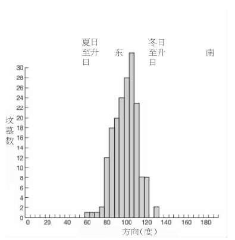

天文史学家主要依靠遗存下来的文献（古代文献在数量上比较零散，占压倒性多数的文献出自近代）以及仪器和天文台之类的人造物进行研究。但是，在文字发明之前 就生活于欧洲和中东的人的“宇宙观”中，我们能够发现天空所起的某些作用吗？是否曾经甚至有过一种史前的天文科学，使得当时的某个杰出人物得以预告交食现象？
为回答这些问题，我们主要依仗遗存下来的石碑——它们的排列、它们和地形的关系以及我们在某些石碑上发现的雕刻（通常是意义不明的）。当某一块石碑很独特时，根本的判断方法问题就最容易受到争议。例如，巨石阵在一个方向朝向夏至日的日升，而在另一个方向则朝向冬至日的日落。我们怎么能认定，这样一种在我们看来具有天文学意义的排列，正是巨石阵的建筑师因为该理由而选择的呢？它会不会是出于某种非常不同的动机或甚至是纯属偶然呢？另举一个例子，一座建于公元前3000年左右的石碑朝向东方，可能是因为金牛座中的亮星团即昴星团在东方升起，可能是因为它朝向夏至和冬至日升方向的中点，可能是因为在那个方向有一座神圣的山，或者选择这个方向只不过是为了利用地面的坡度。我们如何能判定，建造者怀有的是其中的哪一个想法（如果有的话）？
当论及散布于广阔地域中的大量石碑时，我们就不会那么盲目了。西欧的考古学家研究了石器时代晚期（新石器时代）的公墓，那个时候狩猎者的游牧生活已经被农夫的定居生活所取代。这样的坟墓为氏族的需要服务了许多年，因而它们都有一个入口，当有需要时，其他的尸体可由此放入。我们能够确定，坟墓的朝向正是里面的尸体通过入口向外“眺望”时的视线方向。

图1 葡萄牙中心区及邻近的西班牙地区177座七石室坟墓朝向的直方图。当计入地平高度后，我们发现，每座坟墓都在一年的某个时候朝向太阳升起的方向，大多是在秋天的月份里，我们可以料想当时建造者正好有闲从事这样的工作。这一点符合将坟墓朝向开工这天太阳升起方向的习惯，如同后来在英格兰和别的地方建造基督教堂时所惯常实行的那样。
在葡萄牙中心区有很多这样的坟墓，它们具有独特的而且是瞬间即可辨认的形状和构造，由习俗相同的人们所建造。它们散布在东西长约二百公里，南北宽度也近二百公里的一个无山地区，但是作者曾经测量过的177座坟墓全都面朝东方，在太阳升起的范围以内。
不仅如此，秋冬季节太阳升起的方向也是被优先考虑的。现在我们从书面记载得知，在许多国家基督教堂的传统朝向为日升方向（一年中两次），这是因为冉冉升起的太阳是基督的象征；建造者通常在建设开始之日使教堂面向日升方向来保证这一点。假定新石器时代的这些坟墓建造者遵循相似的习俗，假设他们也将升起的太阳视为一个生命来临的象征，那么既然他们无疑在收获之后的秋冬季节才有空闲从事诸如此类的工作，于是我们就有望发现我们实际所发现的朝向模式；难以想象任何其他解释可以说明这种引人注目的朝向。所以，推断新石器时代的建造者将他们的坟墓朝向定为日升方向，应该是合理的。
如果事实确是如此，则我们有证据认为，天空在新石器时代宇宙观中所起的作用，就同它在教堂建造者的宇宙观中曾起过（和正起着）的作用一样，但是，这同“科学”无关。主张史前欧洲的确存在一种真正的天文学的是几十年以前的一位退休工程师亚历山大·汤姆，他查勘了英国境内的几百个石圈 [1] 。汤姆认为，史前的建造者在设置石圈的位置时确保从这些位置看出去，太阳（或月亮）会在某个重要的日子——例如，就太阳而言，为冬至日——在一座远山的背后升起（或落下）。在至日前后几天以内，太阳差不多在地平线的同一位置升起（或落下），只有用很精密的仪器，才可以确定至日的正确日期。依据汤姆的说法，史前的杰出精英们利用石圈和远山构成了范围达方圆好多英里的仪器；他们利用太阳周和太阴周的知识，能够预报交食现象并由此确立了他们在人群中的优势地位。
汤姆的工作激起了人们巨大的兴趣，当然也引发了争议。但是，人们重新调查他的研究处所后能得出这样的结论：他知道他挑出的那些远山会符合其观念，而这样的排列可能纯属偶然并且和史前建造者没有任何关系。现在几乎没有人相信汤姆的猜想了，虽然任何一个试图理解史前宇宙观的人都应该因为他将注意力引向这样的问题而感激他。
我们可以肯定，在史前时期，天空至少为两类人（航海者和农夫）的实际需要服务。今天，在太平洋和别的地方，航海者利用太阳和恒星探寻他们的航程。史前地中海的水手无疑也是如此，但是在这方面几乎没有什么资料留存下来。关于农历——农夫始终需要知道何时播种及何时收获——我们倒有些线索。即使在今天，在欧洲有些地方，农夫还在利用希腊诗人赫西奥德（约公元前8世纪）在《工作与时日》中为我们描述的天体信号类型。每年太阳在恒星之间完成一次巡回，所以某颗恒星（例如天狼星）会因为太靠近太阳而有几个星期在白昼不可见。但是，随着太阳的继续运动，天狼星在拂晓的天空中闪现的日子就会来临，这一刻即为“偕日升”。赫西奥德描述了偕日升序列，他那时的农夫把这一序列用于他们的历法中，而这就定然将前几个世纪里汇集起来的知识和经验浓缩纳入其中。令人惊讶的是，似乎有早得多的这样一个序列被铭刻在马耳他姆那德拉寺院的柱子上，这个寺院可追溯到公元前3000年左右。我和我的同事找到了一连串似为计数单位的雕刻的小洞，在分析了数目之后，我们发现它们很好地表述着一次重要的偕日升和下一次之间所隔的日数。正如我们将要看到的，天狼星的偕日升很快就在附近埃及的历书中起到了关键的作用。